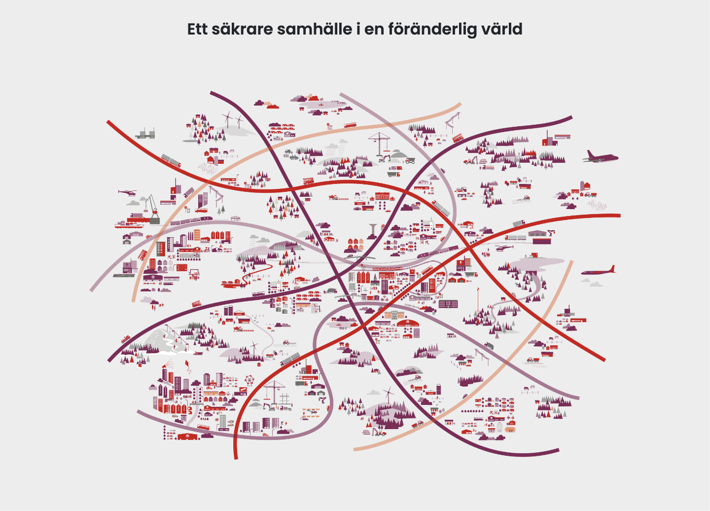

Träd har större risk att falla under kraftiga vindar, i synnerhet vid storm eller orkan.
Trädet skulle kanske normalt klara vinden, men rötterna ger vika. Orsaken kan vara blöt mark eller att marken inte är frusen
Trädet skulle kanske normalt klara vinden, men rötterna ger vika. Orsaken kan vara blöt mark eller att marken inte är frusen